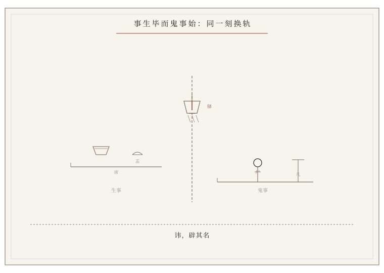

檀弓下 · 四·六十八 · 第 393 课
虞而立尸，有几筵，卒哭而讳，生事毕而鬼事始已。既卒哭，宰夫执木铎以命于宫曰：「舍故而讳新。」自寝门至于库门。
说什么事：下葬之后行虞祭，始立尸（以人代死者受祭），始设几与筵；到卒哭之祭，始避死者之名。自此，事活人的那一套结束，事鬼神的那一套开始。卒哭之后，宰夫摇木铎在宫中传命：「舍去旧讳，立新讳。」从寝门直到库门。
落在哪一层：以「事生／事鬼」为界。礼在两套之间划一条线，线上四件事换轨：尸、几筵、讳、铎。
为何编在此位：上是「仕而未禄」辨名与恩，此是「讳」辨生名与神名。名之一物，生前不避，死后始避——名有任期。
【经】虞而立尸，有几筵，卒哭而讳，生事毕而鬼事始已。既卒哭，宰夫执木铎以命于宫曰：「舍故而讳新。」自寝门至于库门。
【注】讳，辟其名。／谓不复馈食于下室，而鬼神祭之。已，辞也。／故，为高祖之父当迁者也。《易说》帝乙曰：「《易》之帝乙为成汤，《书》之帝乙六世王，天之锡命，疏可同名。」／百官所在。库门，宫外门。《明堂位》曰：「库门，天子皋门。」
【疏】此一节论葬后当以鬼神事之礼。未葬由生事之，故未有尸。既葬，亲形已藏，故立尸以系孝子之心也。前所云「既窆，而祝宿虞尸」是也。／「有几筵」者，未葬之前，殡宫虽有脯醢之奠，不立几筵。其大敛之奠，虽在殡宫，但有席而已，亦无几也。其下室之内有吉几筵。今葬讫，既设虞祭，有素几筵。／「卒哭而讳」者，「讳」谓神名也。古者生不相讳，卒哭之前，犹生事之，故不讳。至卒哭，乃有神讳也。／「生事毕而鬼事始已」者，并解所以虞立尸、卒哭而为神讳义也。既虞卒哭，则生事毕，鬼神之义方为始也。／「下室」谓内寝，生时饮食有事处也。未葬犹生事，当以脯醢奠殡，又于下室馈设黍稷。郑君答张逸云：「未葬，以脯醢奠于殡。又于下室设黍稷，曰馈。下室，内寝也。」既虞祭，遂用祭礼，下室遂无事也。皇氏以为虞则不复馈食于下室，于理有疑。／「高祖之父」，谓孝子高祖之父也。于死者高祖也，卒哭犹未迁，故云「当迁」也。至小祥乃迁毁也。／凡郑云「说」者，皆纬候也。时禁纬候，故转「纬」为「说」也。／「自寝门至于库门」，前既执木铎以命宫中，又出宫从寝门至于库门。寝门、路门、库门，是鲁之外门也。鲁三门，故至库门耳。若天子五门，则至皋门也。
虞 葬后安神之祭。
尸 代死者受祭之人。
几筵 凭几与坐席。
卒哭 哭有定止之祭，虞后行之。
讳 避称其名。此处谓神名。
生事 以生者之礼事之，馈食、侍奉。
鬼事 以鬼神之礼事之，祭祀、立尸。
已 语辞，表终竟。
宰夫 掌宫中政令之官。
木铎 木舌之铃，摇之以警众传令。
舍故 舍去旧讳。
讳新 新死者入讳。
库门 宫之外门。鲁三门之一。
行虞祭时立尸，设几与筵；到卒哭之祭，开始避死者的名。事活人的一套到此结束，事鬼神的一套从此开始。卒哭之后，宰夫摇着木铎在宫中传命说：「舍去旧讳，立新讳。」这命从寝门一直传到库门。
此章四事，皆在同一刻发生：立尸、设几筵、命讳、摇铎。
四事不同类，而共用一个意思——换轨。
未葬，死者仍算「在」；既葬，形已藏，于是给他一个「代身」（尸），一副「座位」（几筵），一个「神名」（讳），一次「公告」（铎）。
第一层 「未葬由生事之」 疏云：「未葬由生事之，故未有尸。」
尸之立，不是为死者的体面，是为孝子的心。 疏又云「立尸以系孝子之心」——孝子无处可哭，礼给他一个可拜的对象。
第二层 「有几筵」的一线之别 疏辨极细：殡宫有大敛之奠，但「有席而已，亦无几」；下室有吉几筵；直到虞祭，才有素几、素筵相配。
礼的精密在这里：同一间屋，席可以早设，几必待葬后。 不是吝啬一张几，是不许「事生」与「事鬼」的器物混着用。
第三层 「卒哭而讳」：名有任期 疏云「古者生不相讳」——活着不避名，死了才避。
故「讳」不是尊重，是分类。 一个人从「生名」转为「神名」，名分改了，称呼才要改。
第四层 「舍故而讳新」 注云「故，为高祖之父当迁者也」——新讳入，旧讳出，出入同时。
讳有一位子，就得有一位退。 礼不给无限增生的名单：庙有数，讳亦有数。
第五层 铎与门：为什么还要广播 讳是一件极私的事，礼却用木铎把它喊遍寝门至库门。
因为「避」不能只靠一人记得。 全家、百官、宗庙所在，都得知道哪个字今日起不能说。
第六层 「库门」的分寸 疏云鲁三门，故命至库门；天子五门，则至皋门。
同一条令，因国之大小而传播半径不同。礼从不给一国之制套万国之式。
第七层 与上节对读 上节名与恩可分算，此节生名与神名分属两套。
一辨「名不等于恩」，一辨「名有生鬼二相」。礼于名，最不肯含糊。
与今日何干 今之机构，人一走便删其名、抹其功，与「舍故而讳新」正相反：礼是「入一讳、退一讳」，有序有位；今是「一并不提」。
此章给一句：换轨要有一个时刻，退名要有一个次序。
| 左 | 右 |
|---|---|
| 未葬 | 由生事之，无尸 |
| 既葬 | 形藏，立尸系心 |
| 殡宫 | 有席无几 |
| 虞祭 | 素几素筵 |
| 卒哭 | 生事毕，鬼事始 |
| 讳 | 神名，非生名 |
| 舍故 | 高祖之父当迁 |
| 讳新 | 新死者入讳 |
| 铎至库门 | 令有半径 |
画一幅简略的礼制场景，视点平视，构图左右分。画面正中画一条竖线为界。界之左侧画一组「生事」之物：一张矮席，席上一只陶豆，豆中一点食物，席旁一只水盂。界之右侧画一组「鬼事」之物：一张更高的席，席前立一人形端坐不动，其侧一张矮几。界线之上画一只小铃，铃身悬于一根短杆，铃下三道短斜线表示摇动。画面上方不画建筑。不画文字。赭色只用在小铃的舌上。
